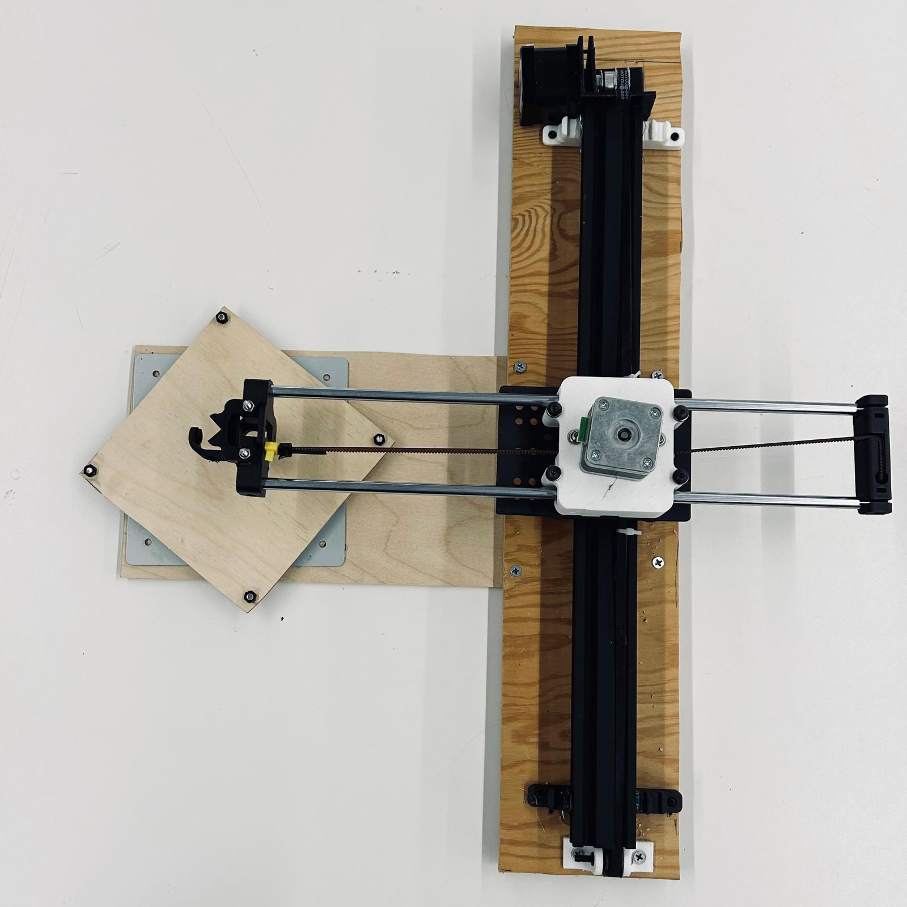
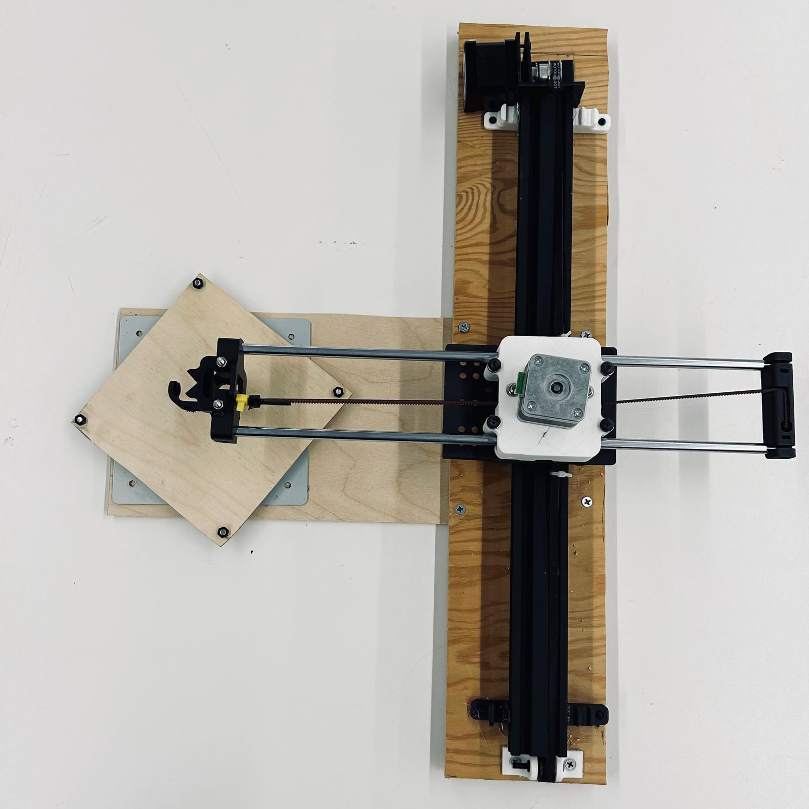
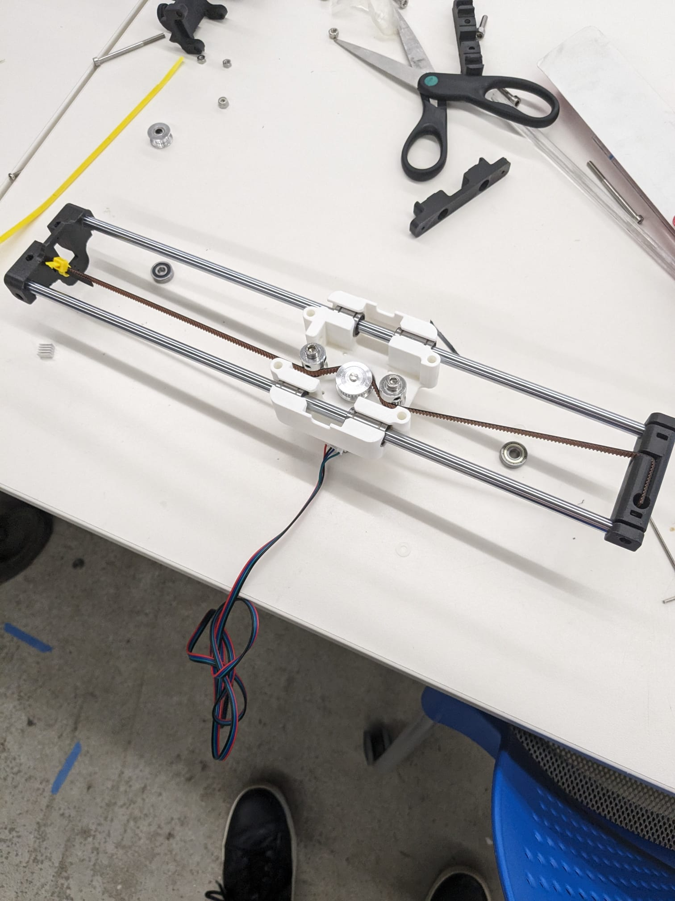
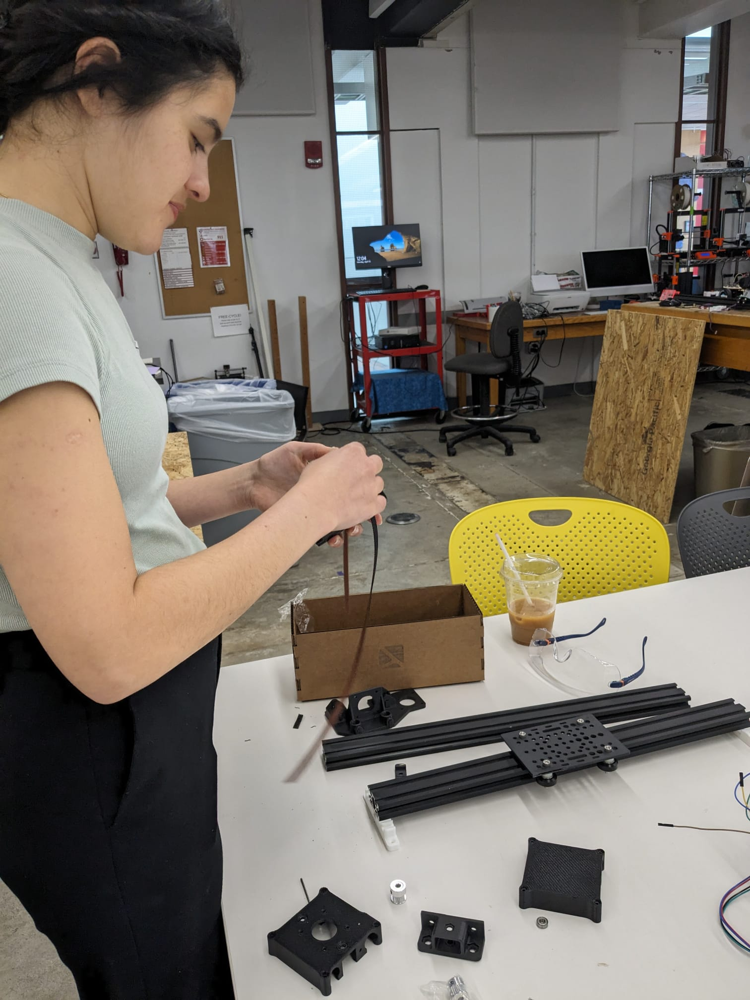
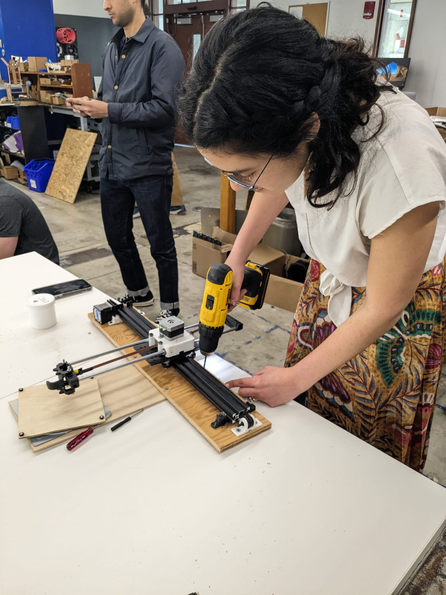
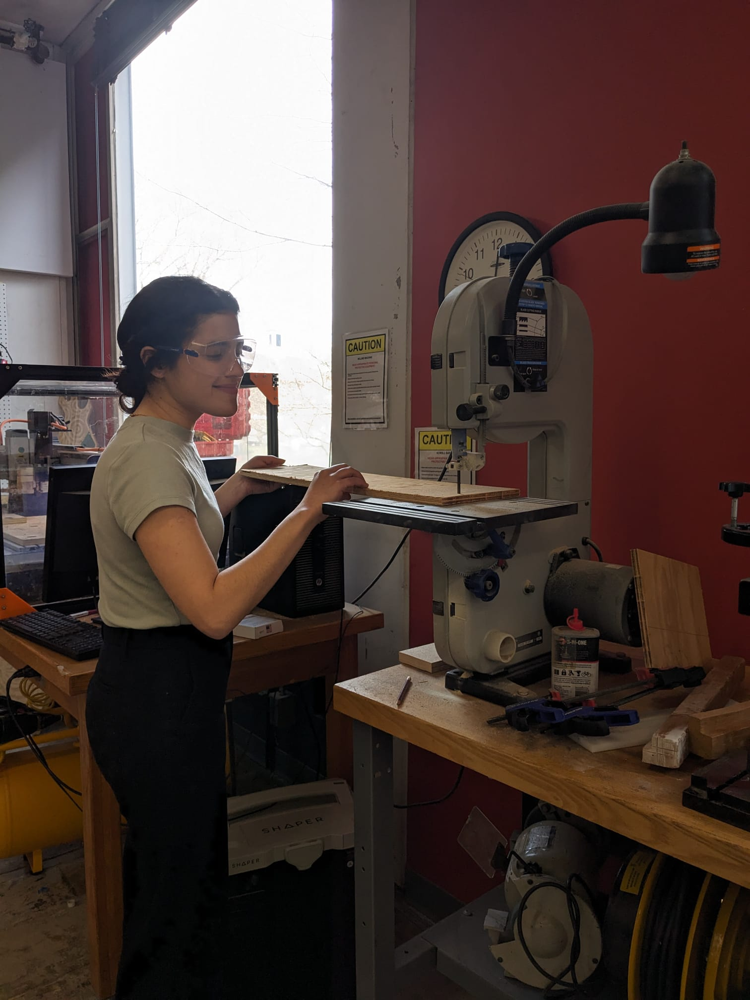
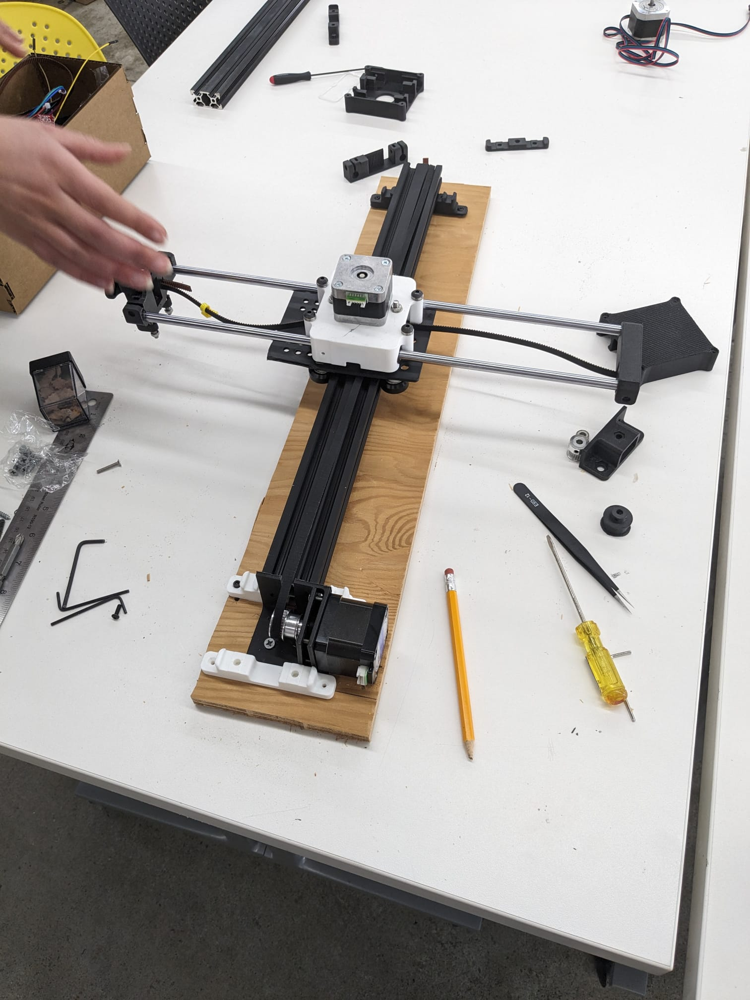
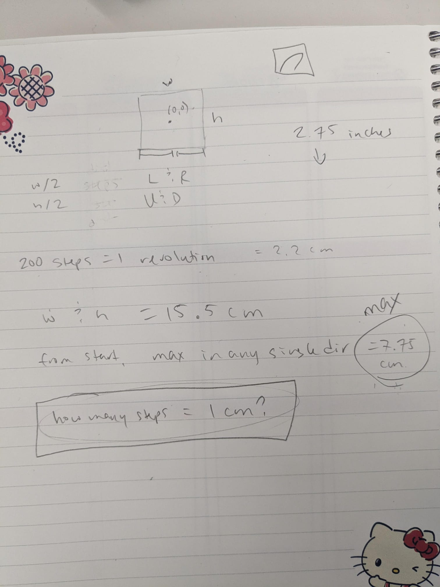

Project 10: Making a Machine
Mandala Drawing Machine
For the past two weeks, I've worked with Sophia, Alex, and Tarun to create this Mandala drawing machine: 

Idea and Inspiration
We wanted to put a twist (literally!) to our drawing machine. So, we made it rotate! Our idea is to have a fixed drawing machine move and draw a user-defined line atop a slowly rotating platform, making a complete mandala. This was inspired by this project: Inventor Artist Cardboard Mandala, except we added real time user input to it, and defined machine movement with 2 axes, which increases the flexibility and freedom of our drawings!!Project Elements
We had a four person team and many moving parts (literally!), so let's break down the project into components. On the coding side, we needed to have a line input interface, a way to transmit that to the drawing machine, and a way to convert the coordinates of the line into stepper motor code. On the physical side, we needed a machine with full axis flexibility (3D printed and assembled), and also a rotating platform. On the cloud database side, we had to have a space to receive and hold all the user inputs. I was in charge of the cloud database, the input interface, and the transmittance of data. Sophia and Alex were in charge of the physical machine, its assembly and design. Tarun was in charge of the arduino code of the stepper motors!Input Interface Design ©
I implemented the website in Svelte, in anticipation of a real-time data transfer to Firebase. For simplicity and for better clarity of mandala movement, we decided to send the user input line at the end of the drawing instead of throughout. This is evidenced by our "save" button, which would then flash a "SENT to the machine!" notification. I coded the canvas so that the user is limited to one single stroke, with the option to redo it if unsatisfied. During the drawing, it remembers the coordinates of each point of the line and saves it to a dictionary with x: _ y:_, ... as its structure. When sending, it uploads it all to "COORDS" on the firebase database. This is then read by the ESP32's Arduino code and converted into stepper motor code.3D Printing and Assembly


We decided to follow a tutorial to assemble a simple x-and-y-axis 2D drawing machine. This was an incredible effort over two weeks,
as our first few attempts at 3D printing and assembly were thwarted by varying dimensions across files, missing parts, and other little mishaps.
Sophia and Alex painstakingly worked with multiple different versions of part files, with different scales for each one. After
approximately 3-4 full attempts at the 3D printer, we were able to fully synchronize every single part to another, and begin assembling.



We attached a lazy susie style wooden platform to the center of our intended canvas. We also secured the entire axes onto a wooden platform.
Programming the ESP32
This is where we began doing the hard work of converting coordinates to stepper motor directions. What pixel correlates to which inch, and how does that correspond to one step? We took pen to paper to convert the math out:
Tarun was able to convert that into ESP32 code, which accessed the Firebase database and converted into stepper motor code: